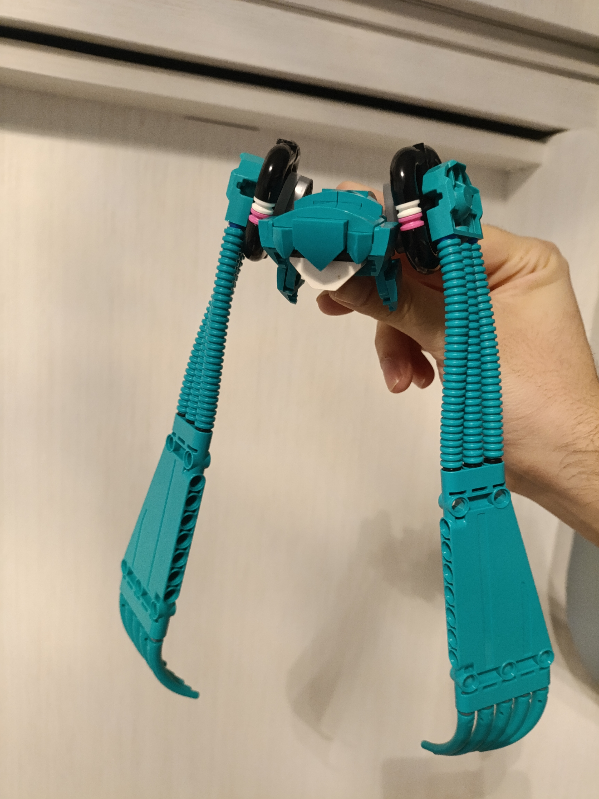
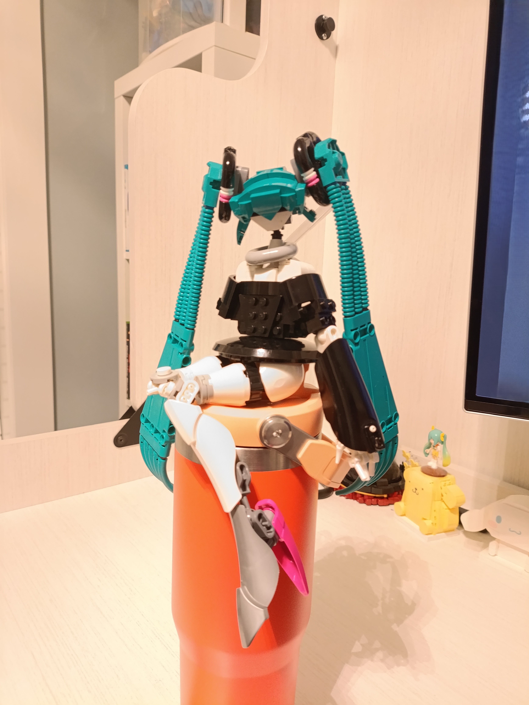
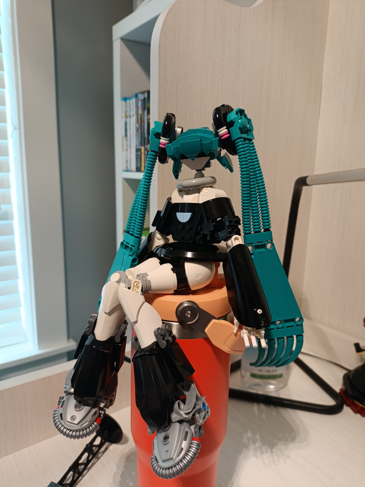
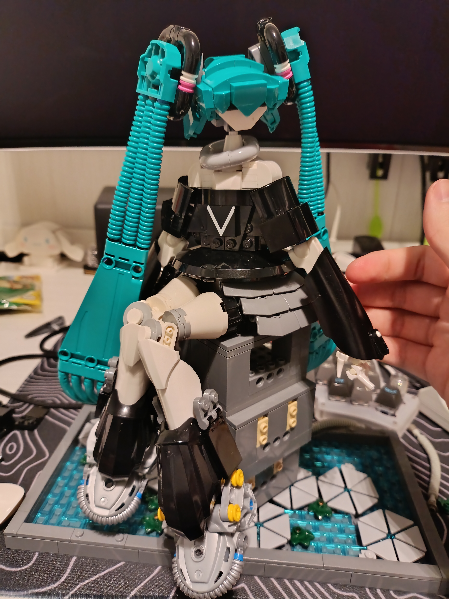
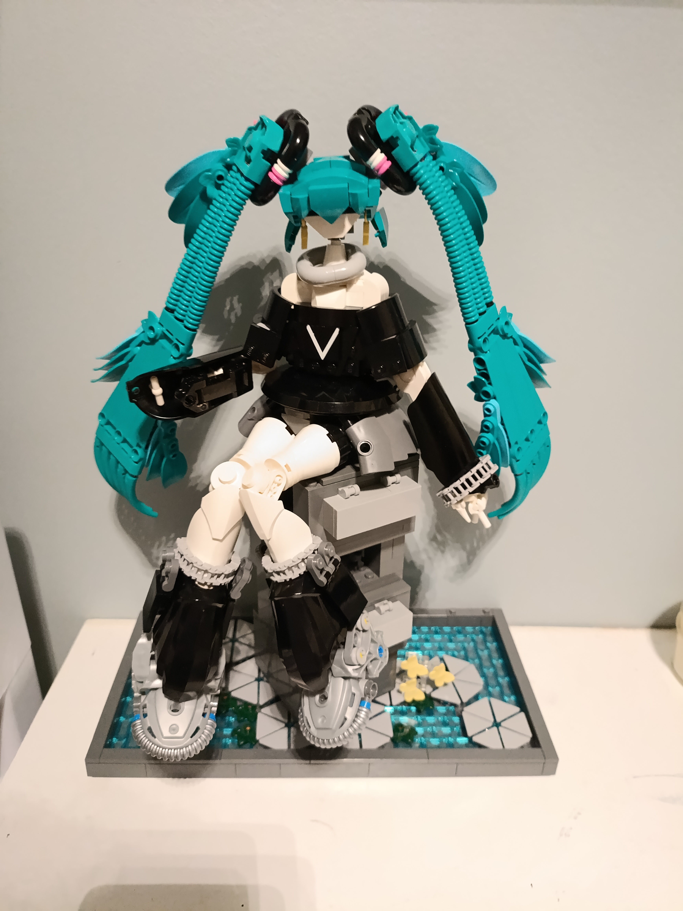
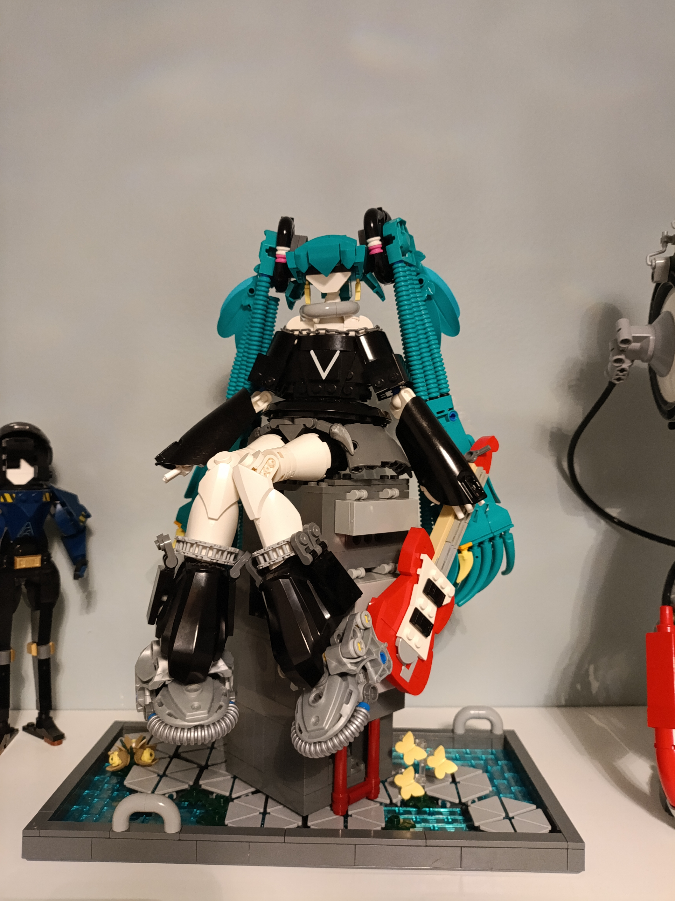
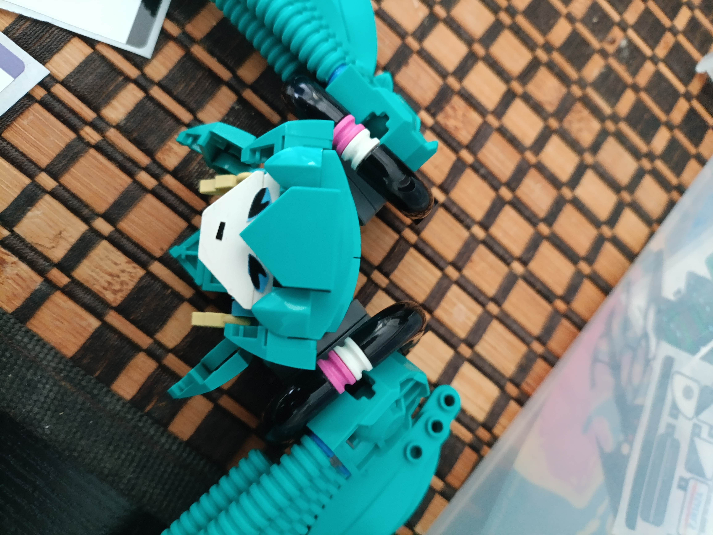
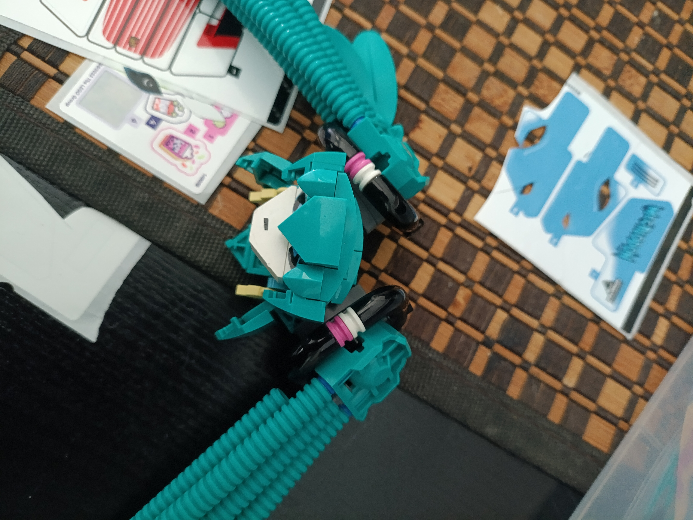
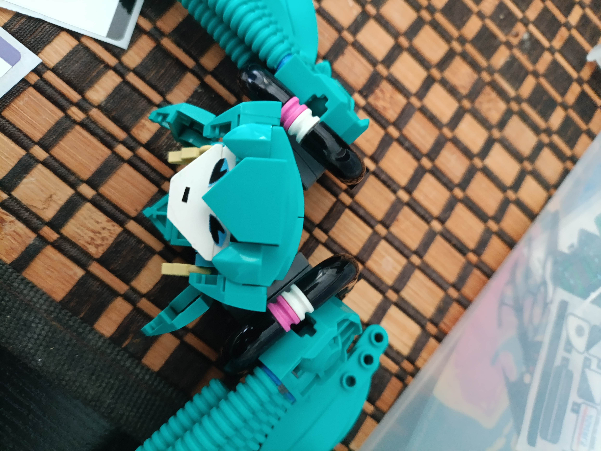
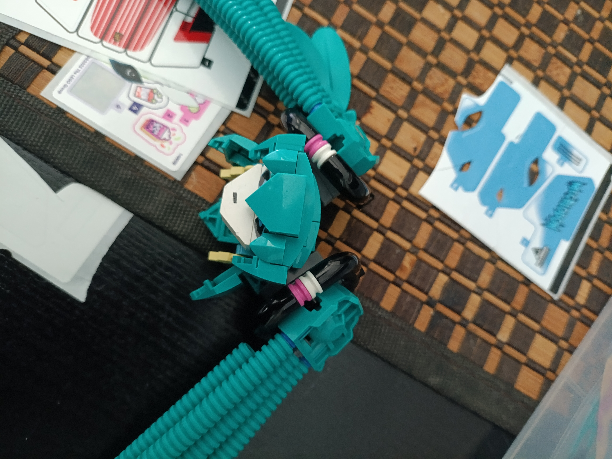

übel
Happy Miku Day! This is for a collab organized by my friend Ben. You can check out all the contributions here!


I made a sort of early aughts indie rocker Miku, as respect to the small smattering of math rock and shoegaze vocaloid artists that shaped my musical taste in highschool and beyond. The first one that comes to mind is もっふーP/moffP's album ハイカラレコード (High Collar Record), which I downloaded off a /mu/ sharethread in 2014 and have come back to listen to during different points in my life ever since. Listening to it revives a lot of emotions and memories that almost feel like they came from a different person - it's hard to describe the complicated feeling of remembering who I once was and the things that excited and worried me back then. Maybe it's because the album itself is melancholic and nostalgic by nature, that it makes me feel this way. Anyways, it's a solid album with bangers such as Flashback, which is also on the popular mikgazer Vol. 1, and my personal favourite, Halo. moffP has been the bassist for the band Cider Girl since 2014.
Another favourite project of mine is 翁/okina's album 発見集 (hakkenshuu), which Sadie put me on to a few years ago. It's a lot more heavy, full of drop tune doubled guitars that lean it more into hardcore than strictly shoegaze/rock. Some tracks blend some industrial-ish electronic pop as well. It all goes insanely hard though, the grungy rhythm guitar hits and hectic breakbeat drums on tracks like 押入れる6月 or 果てへ fire me up every time, and throughout the album I'm constantly impressed by the diverse and economically employed range of guitar tones and effects that seem to pop in and out with perfect harmony. It's clear that there's an immense appreciation of a wide multitude of guitar styles and rock sub-genres that can all co-exist with a little j-pop glue.
übel is the name of a 2015 album project that conveniently features the two musicians I've highlighted above already! It's very heavily a math rock focused album, and I actually quite like every song on here. Very classic j-rock progressions and punchy treble tone, hyper-active arpeggiated chord riffs, lots of guitar tapping, odd time signatures, all mixed with that midwest emo melancholy. I guess this stuff isn't really that hip anymore but the music I liked when I was 14-17 will still be the music I like now, and also the music I like to play. I'm going to make an effort to learn some of the songs here I think, a lot of super fun riffs that I want to learn. Music is very much an active experience for me, I rarely put on music on in the background and prefer to focus on my music when I do, so I appreciate the complexity and changeups present here that keep me as a listener entertained. I really like the extremely catchy 5/4 hook on レンドルは言ったんだ, and the sudden 3/4 waltz bridge on Retrieve. 排気塔の国 translates typical mathrock arpeggios to the piano in a funny twist, as math rock riffs are often written in piano friendly open tunings and tend to mimic common piano inversions, so it blends seamlessly but still has that math rock feel. I love the haunting minor 7th wall of sound that opens on 口には必要悪の味が残. With the mellow miku vocal timbre, it has a very distinct sound I feel I can only attribute to okina.
I ended up spending quite a lot of time on the build and made something a lot more elaborate than I initially planned. Or, I guess I didn't have much of a plan to begin with. I actually had quite a bit of teal parts from Monkie Kid and CNY sets, so I managed to throw together a head really quickly that only saw minor revisions later on.

I like the squashed polygonal look it has and wish I could've extended more of that aesthetic to the rest of the build, honestly. After working out the shoulders and sleeves, I went on autopilot for a bit and constructed her limbs using parts and techniques that I've used countless times by now on things like Meng Yan, Roodaka, Sigil, and more.

I was planning on replacing a lot of the CCBS parts but I got a little attached to them. They do get overused for a reason. Overall, I'm happy with the contrast between the super G1-type sections like the feet and ponytails with the system bricks and slope sections such as the head and body. I guess the CCBS stuff is limited to the arms and legs so it is actually consistent in that way, if I think about it.

The skirt was a little challenging to make work in the pose I had in mind. I really wanted to use the new technic panel connectors to make pleats but they don't really fit the space of the x-pod lid all the way around, so there's a big gap in the back that I'll maybe think about filling in somehow before I bring it to a convention. I think how I filled the front part where her legs ride up is an okay solution but it's a bit flat. Anything better probably requires doing something entirely different for the skirt. Also, there's not much articulation, but the legs and torso can swivel independently, which was enough to make it feel just a bit more dynamic.

This is the first time I've used a baseplate for a build. I knew I'd need something to get her in the sitting pose and still have room for the hair to fall down, so I threw together whatever base patterns that I could think of. There's not much thematic reasoning on why it looks the way that it does but I think I'm okay with it being mostly utilitarian. Like I'm not sure why she's sitting on an obelisk in a pond with cyber lilies, algae and butterflies on it but whatever.

The guitar is based on a Fender Jazzmaster, an ever-present icon in indie rock and shoegaze. Whenever I build something from reference now I boot up Stud.io and use a reference image to help me figure it out faster. I really wanted to capture the unique asymmetry of an offset guitar so I focused on the outer shape and as a result the front is a little rudimentary. The only reason it's red is because those are the colours I had all the snot bricks and slopes in. Would've loved to do a more pastel colorway but I guess the pop of the red is nice too. I actually have a Jazzmaster and it sort of matches my Miku, lol.
{kind=link}

At the last minute, I experimented with using stickers to make some eyes but settled for a little puckered mouth instead.
 



I spent quite a bit of time taking photos and editing them. It was hard finding the right settings to get everything in focus and still maintain the composition I had in my head. I couldn't choose just one layout that I tried so I thought I would simply share all of them. Maybe other people have a preference? I think I went a little overboard with the edits though. I'm on the fence on whether I should just focus on showcasing the build itself or letting it exist as a multimedia type of work. There's merits to both approaches I suppose. I'm also a complete caveman when it comes to using Photoshop, for evidence just look at how inconsistent the background edits are between each photo. But keen shoegaze fans will recognize the graphic I used to texture the background...
Some photos of the old version before I changed the head slightly.


Well, thanks for reading, if you got this far! Felt like rambling a lot more on this one since there's usually not anything worth verbalizing on my normal stuff.